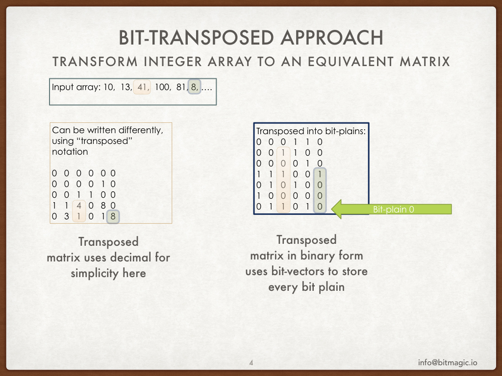
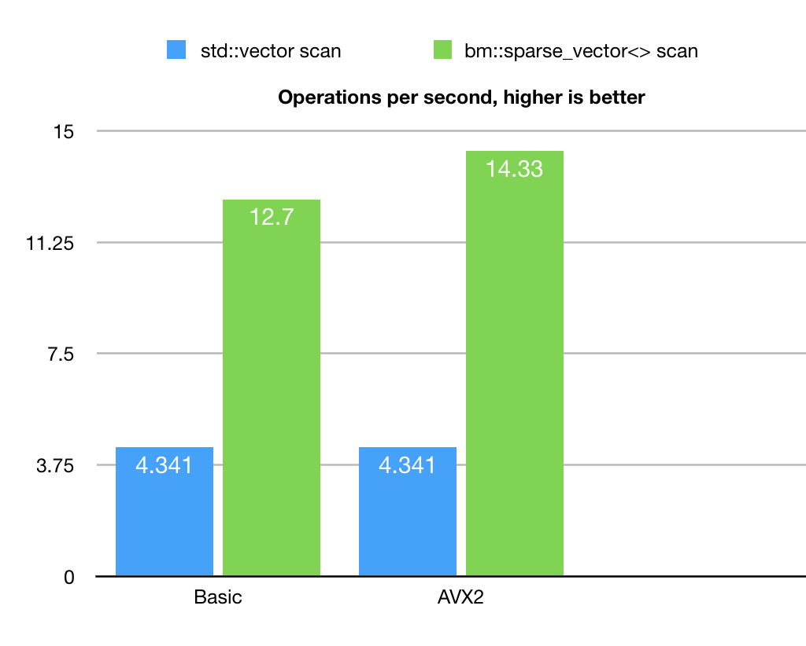

Search with bm::sparse_vector<>
Anatoliy Kuznetsov. June 2018. (updated on Aug 2018) anatoliy_kuznetsov@yahoo.com
Introduction
 BitMagic library provides container for bit-transposed integer data. Bit-transposed representation of data uses binary properties where each bit is stored using its own bit-vector, so the result can be represented as a bit-matrix or a list of bit-vectors. Convince yourself - this is an equivalent data. Since it is equivalent - we can define the same set of operations, as on the original array of data.
Bit-transposed representation has its strength and weaknesses. One possible advantage: data may have lower dynamic range, than full 32-bit (64-bit, 16-bit..) original data point. In this case some bit-plains will stay totally empty and consume less memory (form of in-memory compression). A variation of the same data compression happens when longer array exposes non-uniform dynamic range with peaks and valleys. BitMagic bit-vectors manage its data by blocks will drop empty parts of high-order bits in the flat valley regions.
Where is the catch?
The catch is that access to an individual element of the original vector becomes complicated, high latency operation, where we need to re-assemble single array element from bit-vector plains. This will surely be slow, require cycles and employ cache unfriendly memory access.
How can we solve this problem?
Algorithms on transposed data
The proposed approach is to develop algorithms which can solve problems without conversion of data into its original form (de-compression), utilize properties of bit-vectors to avoid inefficient operation. Minimize memory access (bandwidth optimization), use SIMD parallel algorithms to do the work.
Lets review a simple scan algorithm, which should iterate the array to find indexes of elements equal to each value. Linear scan.
Linear search algorithm has known complexity, proportional to number of elements in the array. All elements has to be inspected for being equal to search value. As a result we create a list of array indexes to pass our search criteria (match). Better yet, the result can be a mask bit-vector, where matching indexes are marked as 1s. Bit-vector is a natural choice for a search result, since it can be used later for logical operation (UNION, INTERSECTION, etc) with another search result. It is a common design pattern for a search system.
EQ search on bit-transposed matrix
First, lets reformulate our search algorithm.
- Scan the input integer search value, find indexes of all ON bits. For example value 8 in binary form would be 01000B which gives us { 3 } (naturally 8 is 2^3). Value 10 would be 00101B which is { 0, 2 }.
- Use the transposed matrix, compute aggregate AND of all rows (plains) corresponding to list from step 1. In other words it is necessary to ensure, that all 1 bits in the search value are 1s in all corresponding bit-transposed plains. This step creates an creates a bit-vector of indexes of an approximate match. All bits which has to be set are indeed set, but there are false positives, it will include values, where extra elements are also included. Basically we performed Greater or Equal search (not exactly, but sort of).
- 3. Use transposed matrix and perform set operation SUB (MINUS), exclude all plains where bits are NOT set in the search value. Again, value 10 is plains { 0, 2 } so we need to subtract all 0 bit-vector plains: {1, 3, 4, 5, 6, etc}. Subtraction operation is defined as logical AND NOT, so conceptually it is the same as step 1.
Now if we perform all 3 steps we get our results (indexes of equivalent values) in our target bit-vector.
The described algorithm is essentially a linear scan implemented via logical bit-vector operations AND and NOT. The interesting and relevant detail here is that AND / AND NOT operations are causing population reduction, which opens an important optimization opportunity. Blocks of original data may converge to zero in areas where search value is not present so whole blocks of memory does not need to be processed. This opportunity is probabilistic, depends on the input set and important for some cases, where data rare (for example: unique unordered set).
Quick example
#include "bmsparsevec.h"
#include "bmsparsevec_algo.h"
typedef bm::sparse_vector > sparse_vector_u32;
.....
{
sparse_vector_u32 sv(bm::use_null);
// here we set the 1:1 relation as 2 -> 25, 3 -> 35, etc
sv.set(2, 25);
sv.set(3, 35);
sv.set(7, 75);
sv.set(1000, 2000);
sv.set(256, 2001);
sv.set(77, 25);
bm::bvector<> bv_found; // search results vector
bm::sparse_vector_scanner scanner; // scanner class
scanner.find_eq(sv, 25, bv_found); // seach for all values == 25
print_bvector(bv_found); // print results
scanner.invert(sv, bv_found); // invert search results to NOT EQ
print_bvector(bv_found); // print all != 25
}
Benchmark

Benchmark example does not pretend to have high academic value, intention is to illustrate the principle. So it generates just one type of input set with specific properties of value distribution. It uses uniformly distributed random values in the [0..1250000] set size of 250000000. This in an unordered set with duplicates.
Example uses BitMagic library algorithm class bm::sparse_vector_scanner to run the search.
As a point of comparison it also implements a plain linear search using STL std::vector.
We can see here, that sparse vector based search actually outperforms the naive linear scan. Algorithm also responds to AVX2 optimization.
The benchmark is based on BitMagic library 3.12.0, which implements bm::sparse_vector_scanner
and const_iterator and back_insert_iterator on sparse_vector<>.
Future Work
Current implementation of AND aggregation can be further improved. Currently it relies on standard bm::bvector<> set algebra implementation between 2 vectors (target and source). This implementation is ok, but can be done better via aggregator, which would process all vectors at once, optimizing block access for better L1 cache reuse. There is always something to improve.
Benchmark update! (Aug, 2018. BitMagic v.3.13.0)
 BitMagic v.3.13.0 went through major optimization, bm::aggregator<> is now a reality.
Future work is not just promises, it's a plan!
It uses cache blocking techniques for logical operations, calculates digests of memory
to optimize bandwidth and employs SIMD optimizations, extra work done to better use prefetch
and properties of modern memory controllers (thanks to collegues from Intel and AMD!).
More optimization details later.
BitMagic v.3.13.0 went through major optimization, bm::aggregator<> is now a reality.
Future work is not just promises, it's a plan!
It uses cache blocking techniques for logical operations, calculates digests of memory
to optimize bandwidth and employs SIMD optimizations, extra work done to better use prefetch
and properties of modern memory controllers (thanks to collegues from Intel and AMD!).
More optimization details later.
The results are 2-3x times better now (some compiler dependent variability), the scan algorithm becomes more of an HPC (substantially better response to AVX2 vectorization), not so much memory bound which is a curse of many bit-vector based algorithms. As you may already noticed the baseline benchmark based on std::vector<> somewhat improved, which is a mistery, probably related to some silent compiler upgrade, presense or absense of other processes or tweaking of ambient house temperature by my better half (influence of spouses on CPU benchmarking needs to be seriously studied).
Conclusions
Bit-transposed representation of integer data can be used for in-memory compression. Use of algorithms designed for bit-vectors can offer performance benefits related to vectorization and more efficient memory bandwidth utilization.